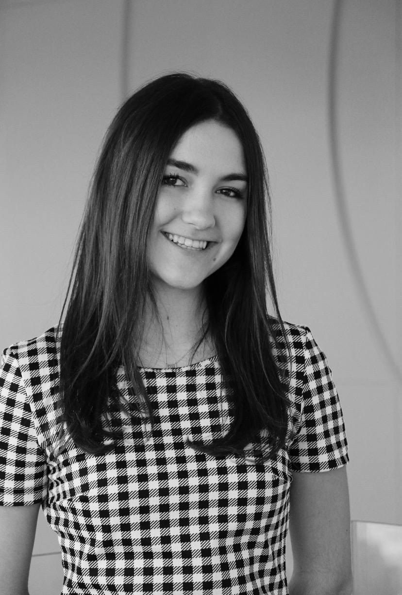

I've been always gravitated towards cameras ever since a young age, and have considered photography both a passion and hobby for years. From my mom's small digital cameras to her DSLR used mainly for family pictures, I always tried to get my hands on anyone's camera I could. After receiving a Canon Rebel T5 as a gift after years of begging, I began taking all kinds of pictures. While portrait photography remains my favorite, I've lugged my camera to every party, vacation, and concert within reason to photograph a wide variety of shots. As a junior undergrad student at Syracuse University, my photography continues to be a hobby I am always looking to expand.